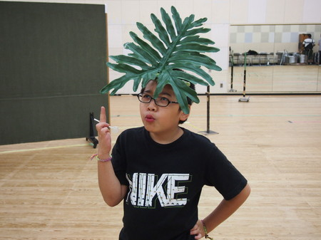
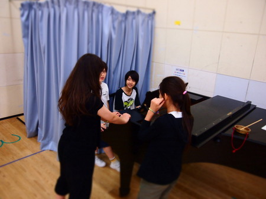
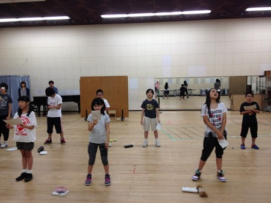
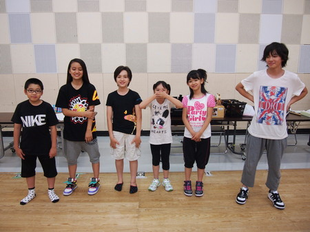
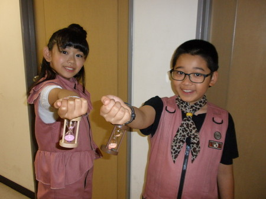
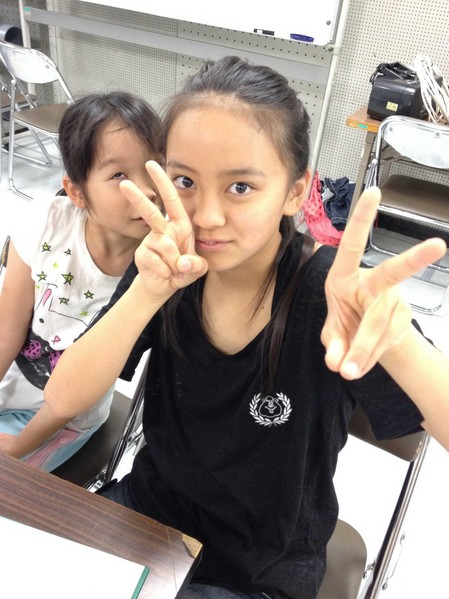
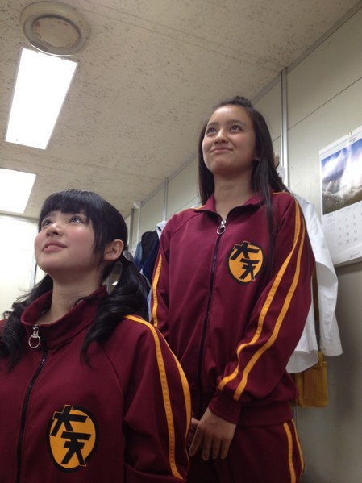
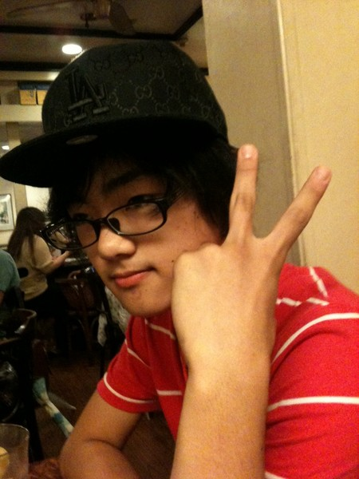

<<2012年6月 | トップページ | 2012年8月>>
2012年7月
【夏のイベントに向けて】お仕置き
先日、出川さん、あきえさんが練習に参加したときのこと。
真剣に発声をする中、後ろを振り返る白いＴシャツ姿のボスの足下には…
お仕置きの王道、ハンマーが。
てれび戦士はロングトーンが20秒続くことを目標に、毎日練習をやってきました。

すでに足下のハンマーを手に取り臨戦態勢のボス。
残念ながら竹原は20秒を超えることが出来なかったため…
ピコッ！！！！
こうなるわけです。島田も大変な驚きようです。
竹原：いててててて
そして…黒澤！！！
黒澤：あいたーっ！！
最後にボスの餌食になったのは…延命ちゃん
延命ちゃん：えー痛くしないでくださいね
ひょい
逃げるな＝＝＝
ちなみに7月31日現在、20秒を超えられてないのは、竹原と延命ちゃん。
黒澤は数日前にようやくクリアしました。
さぁ、本番までにどうなるかなぁ。。
投稿者:大天才テレビジョン社員３号 | 投稿時間:23時55分 | カテゴリ：お知らせ！ | 固定リンク


 " title="ソーシャルブックマークについて">
" title="ソーシャルブックマークについて">
※NHKサイトを離れます。
【夏のイベントに向けて】食
先日ご紹介した寿々歌の台本にあるとおり、“おえらいサン”たちがやってきた！
こちらの“おえらいサン”たち、正確には技術や美術のスタッフのみなさん。
本番と同じ形で行われるリハーサルを見て、どう撮影するか、どういう照明にするか、舞台上でやるには不都合がないか、など検討するのです。
稽古場とは言え、本番さながらの演技が繰り広げられます。
すでに衣装を着けてのお芝居ですので、内容がわからないように、画像は加工してあります。。
ただ、とっても賑やかな舞台になることは間違いありません。。
そしてここからは全く関係のない話を。
お昼ご飯の休憩時間中、ボールで遊ぶてれび戦士たちを離れた場所から眺める男。

竹原司である。
なぜ一人かと言うと…
デザートを食べるため。
「このフルーツは九州産で、いま人気急上昇中で、なかなか手に入らないもの」なのだと聞いてもいないのに教えてくれた。
悦に入った表情が印象的だが、食べ過ぎの感もある。。。
投稿者:大天才テレビジョン社員３号 | 投稿時間:23時30分 | カテゴリ：お知らせ！ | 固定リンク
" title="ソーシャルブックマークについて">
※NHKサイトを離れます。
【夏のイベントに向けて】落書き、大事なこと
日々、演出にいろんなことを指導されるてれび戦士たち。
忘れないようにと台本の空いたところにいろんなメモをとっています。
それはなかなか興味深く、個性が表れているので、そのいくつかをご紹介しましょう。
まずはこの人。
マスクで表情が伺えませんが、崚行です。
彼が滑舌で使っているテキストがこちら。

「意味意識」「噛む、噛まないより、伝わる、伝わらない」
うん、真面目なところが出ていますな。
お次はこの人。Mouster 延命杏咲実さん。
毎日行っているロングトーンの記録を書いた紙です。
ちなみに7月28日現在、目標の20秒は超えていないのですが…
一喜一憂しているのがありありとわかりますね。
もう一つ延命ちゃん。

まじめにやれーーーーー！！
投稿者:大天才テレビジョン社員３号 | 投稿時間:12時00分 | カテゴリ：お知らせ！ | 固定リンク
" title="ソーシャルブックマークについて">
※NHKサイトを離れます。
【夏のイベントに向けて】来訪者
先ほど稽古場にある人がやってきた。
この写真に写っているのだが、誰だかわかるだろうか？
そう、北の国支局に異動になった矢部昌暉氏である。
そういえば前回の冬のイベントでは、延命ちゃんの衣装を探していたっけ。
というわけで、去年の最年長と最年少のお二人。
少し身長も伸びたそうだ。
崚行と並ぶと、やはり昌暉の方がお兄さんという感じだ。
なんで空のペットボトルを持っているんだろう。
全然話しはかわってコレは寿々歌の台本…
あすは「おえらいサン」が来るのか…
投稿者:大天才テレビジョン社員３号 | 投稿時間:20時40分 | カテゴリ：お知らせ！ | 固定リンク
" title="ソーシャルブックマークについて">
※NHKサイトを離れます。
【夏のイベントに向けて】定点観測
何やら監督に教えを請う延命ちゃん

（延命）ハッ！！
（寿々歌）なんかちゃうねんな…

（延命）じゃあ、おしりペンペン。
（寿々歌）あはははは！
（延命）なに笑ってんだよ〜
って…
何なんだその顔は！！！！
投稿者:大天才テレビジョン社員３号 | 投稿時間:12時00分 | カテゴリ：お知らせ！ | 固定リンク
" title="ソーシャルブックマークについて">
※NHKサイトを離れます。
【夏のイベントに向けて】衣装！

夏のイベントまで２週間を切って、少しずつ本番に向けての準備も進んでいます。
衣装も少しずつ完成していっています。
このブログでは特別にその全貌を公開いたしましょう。
まずは、こちら。
いやぁ、すばらしい光沢だ。
そしてこちら。
目にもまばゆい。
緑で丸い…
いやいや、こんなに公開して良いのかというくらい見せちゃいました。
続報をお楽しみに！！
【おまけ】
休憩中、アメをなめてるニイナさん。。（確か、陶子さん撮影）
投稿者:大天才テレビジョン社員３号 | 投稿時間:12時00分 | カテゴリ：お知らせ！ | 固定リンク
" title="ソーシャルブックマークについて">
※NHKサイトを離れます。
【夏のイベントに向けて】無題2
今日も練習はありましたが、熱中するがあまり写真を撮ってません。
黒澤が撮影した先日の写真です。眉毛の形が同じ二人。
ロングトーン練習中の寿々歌
そして、イベントの練習は助け合い。
というわけで、ピアノを弾く浅賀先生。

歌を習うは朱里。。
笑顔だけは良いが…
投稿者:大天才テレビジョン社員３号 | 投稿時間:12時00分 | カテゴリ：お知らせ！ | 固定リンク
" title="ソーシャルブックマークについて">
※NHKサイトを離れます。
【夏のイベントに向けて】無題
昨日はボスとあきえさんが練習に参加してくれました。
立ち稽古に参加するのは初めてなので、最初はこのように代役の人に指示を受けながらやっていきます。
はい。お二人の写真はこれだけ。
あとは↓こちらのてれび戦士が撮影してくれた、練習後の写真をいくつかお目にかけましょう。
ロングトーンが２０秒超えない延命ちゃん。
一人居残り練習をしていたんですが…

なかなか上手くいかず…
目に光る物が出現し…
えーん
ばたり。
とにかく頑張るんだ！！
投稿者:大天才テレビジョン社員３号 | 投稿時間:12時00分 | カテゴリ：お知らせ！ | 固定リンク
" title="ソーシャルブックマークについて">
※NHKサイトを離れます。
【ドウブツカメラ！】猿（撮影：浅賀くん・ニイナ）
７月２３日放送「被写体…猿」
今回の動物カメラマンは、浅賀玲音と長谷川ニイナ。
２人が撮ったベストショットはこちら！
※画像をクリックで大きな画像が開きます。
開いた画像を右クリックで画像を保存できます。
撮影：長谷川ニイナ 『見守るボス』
撮影：浅賀玲音 『押すなよ！』

ロケ中の２人のオフショットはこちら！


投稿者:大天才テレビジョン社員２号 | 投稿時間:18時00分 | カテゴリ：ドウブツカメラ！ | 固定リンク
" title="ソーシャルブックマークについて">
※NHKサイトを離れます。
【夏のイベントに向けて】休み時間
連日、稽古に励むてれび戦士たち…
しかし、てれび戦士たちも練習ばかりでは飽きてしまうし、疲れてしまうので…休憩を挟むのですが…

サッカーをし始めるやつもいれば…

バランスボールでエクササイズに励む人もいるんですが…
お前は食うのをやめろ！！！

（この写真だけ陶子さん撮影）
投稿者:大天才テレビジョン社員３号 | 投稿時間:12時00分 | カテゴリ：お知らせ！ | 固定リンク
" title="ソーシャルブックマークについて">
※NHKサイトを離れます。
【夏のイベントに向けて】罪と罰
昨日大変、残念な事件が起きました。
練習が終わったレッスンルームに残されていた…
ロングトーンの記録が書いてある紙。（表には滑舌の課題が書いてある大切なもの）
ちなみにたいしてよい記録ではない。そして落ちていたのは２枚。２人忘れたてれび戦士がいるということ。
さらに発見されたのが、なんと食べかけのドーナツ。。。
これは許し難い！しっかり注意しないと同じことを繰り返してしまいます。
というわけで、
島田（滑舌の紙を忘れて帰った）、金子（食べかけのドーナツを置いて帰った）、浅賀くん（滑舌の紙を忘れて帰った）には
このように罰が与えられました。この日のてれび戦士のロングトーン最長記録（３０秒ジャスト）の方に乗って頂いています。
この方です！！
山田陶子さんでした。
そしてメガネ３人組、お願いだからもう忘れ物はしないでくれ。。
おわり。
ちなみにあまり写真に登場しないそのほかの人も元気にやってます。
あれ、結実とニイナがいない…
投稿者:大天才テレビジョン社員３号 | 投稿時間:12時00分 | カテゴリ：お知らせ！ | 固定リンク
" title="ソーシャルブックマークについて">
※NHKサイトを離れます。
【夏のイベントに向けて】発声が出来ないと...その２
今日も発声練習のお話しを。
これは滑舌の訓練をやってるところですね。

「ダラ、ヂリ、ヅル、デレ、ドロ…」など、発音し辛い言葉を繰り返し言うことで、滑舌が良くなります。
と、言うか良くなってほしい！！おや？
なんか後ろの方に顔に白い四角がくっついてる人がいますね。
なんでも、金子はものもらいが出来たとか。あらら。
さて、息を長く続けて声を出す「ロングトーン」、昨日のブログでは出来なかったてれび戦士を紹介しましたが、
今日は出来る方のみなさんを紹介しましょう。
はい。こちらの３人です。
ちょっと意外なメンバーですか？ でも３０秒近くまで続けることが出来るんですよ。
ちなみに黄緑色の服を着た女性は、鈴木ＡＰが練習に来れない間、代役として練習に参加して頂いている方です。

※写真はおふざけです。
ちょっとあんたたち、少しは私たちを見習いなさいよ！！
ははぁ！すみません。
というわけで、今回２０秒に達しなかった残念なてれび戦士はこちらのみなさん。
金子とソーズビーが抜けて、浅賀君が加入しました。
ちなみに一番奥の女性は番組のスタッフです。
はぁ。本番まで全員２０秒越えることは出来るのかしら…
投稿者:大天才テレビジョン社員３号 | 投稿時間:12時00分 | カテゴリ：お知らせ！ | 固定リンク
" title="ソーシャルブックマークについて">
※NHKサイトを離れます。
【夏のイベントに向けて】発声が出来ないと...
イベントの練習の始まりは、朱里さんによるストレッチ、そして…
おっと、これは変顔の練習ではなくて、発声練習をしてるところです。
息を大きく吸い込んで、ゆっくり吐き出すことで、お腹の底から声を出せるようにするトレーニング。
ＮＨＫホールは広いから、蚊の鳴くような声ではお客さんに自分の存在をアピール出来ないのです。
そしてロングトーン。
「あ−−−−−−−−−−−−−−−−−−−−−−−−−−−−−−−−」
という声を息継ぎせずどこまで続けられるかという、トレーニング。
すでに数日やって、みんな記録もどんどん伸びてきました。
が、今からご覧に入れる６人はまだ２０秒続けることが出来ない、残念なてれび戦士たちです。

うーん。自信のなさそうな表情だ。

この６人の記録は今後どこまで伸びるのか。
またこのブログでご報告することにしましょう。
投稿者:大天才テレビジョン社員３号 | 投稿時間:12時00分 | カテゴリ：お知らせ！ | 固定リンク
" title="ソーシャルブックマークについて">
※NHKサイトを離れます。
【夏のイベントに向けて】結果的にクイズ
イベントの練習は、日々小さなことの積み重ねです。
だからそうそう面白いことが起きるわけでもありません。
というわけで…
写真なら撮って下さい、と寄ってきた陶子さんに…
記者：何かブログの記事になるような面白いことないの？
陶子：ないですよ。あははははは。
記者：じゃあ、カメラ貸すから何か面白い写真撮ってきてよ。
陶子：いいですよ。
（３分後）
陶子：面白い写真撮ってきました。
記者：え、どんな写真なの？
陶子：見て下さい。あはははは。
記者：こ、これは！？！（っていうか何でシロクロ？？）
陶子：■■■のつむじを撮ってきましたww
さて、ブログをご覧のみなさんに問題です！陶子さんは誰のつむじを撮影したしたのでしょうか？
記者：いやいやいや、こんなの誰も興味がないから！！
引っ張っても仕方がないので正解を発表します。
正解は…↓↓↓
竹原司君でした。
投稿者:大天才テレビジョン音楽制作部 | 投稿時間:12時00分 | カテゴリ：お知らせ！ | 固定リンク
" title="ソーシャルブックマークについて">
※NHKサイトを離れます。
【夏のイベントに向けて】とりあえず元気です
昨日はめちゃくちゃ暑かったですね。
でもてれび戦士たちは元気に練習に励んでいます。
出番を待ってる間暇そうにしている浅賀くんに話しを聞いてみましょう。
記事：なんか練習中の面白エピソードってないの？
浅賀：無茶ぶりですね。ええっと…（しばらく考える） まだ始まったばかりなんでありません。
記事：え！？つまんないやつだな。じゃあ、他のてれび戦士の話しでもいいから。
浅賀：他のてれび戦士…？ あ、朱里が「イケてる■■■■■■■■■■！」って台詞を、「イケてるメンズ！」とか「イケてる男！」とか間違えているのに自信満々に言ってておもしろかったです（笑）
記者：（焦りまくって）お、おい、何言ってるんだ。そんなこと言ったらどんな話しか、バレちゃうだろうが？
浅賀：え！？これってイベントが終わった後に出るんじゃないんですか？
記者：すぐにアップするんだよ。もう…少しは考えてくれよ…
浅賀：あ、あ、僕出番あるんですみません…（と言って練習に戻る）
というわけで、今年はどんな内容なんでしょうか。
浅賀くんが言った内容は一部伏せ字にさせて頂きました。
本番をお楽しみに！！
投稿者:大天才テレビジョン社員３号 | 投稿時間:12時00分 | カテゴリ：お知らせ！ | 固定リンク
" title="ソーシャルブックマークについて">
※NHKサイトを離れます。
【夏のイベントに向けて】昨日のちょっとしたサプライズ
昨日は竹原くんの誕生日でした。１１歳になったそうです。
ちょっとサプライズでお祝いしたので、泣いてしまいました。
おめでとう！たけちゃん！！
ちなみに竹原の着てるＴシャツに「２」と書いていますが、それは「司」の「ツ」なんだそうです。
うん…そうですか。
投稿者:大天才テレビジョン社員３号 | 投稿時間:12時00分 | カテゴリ：お知らせ！ | 固定リンク
" title="ソーシャルブックマークについて">
※NHKサイトを離れます。
【夏のイベントに向けて】「柔軟体操」
イベントの練習は柔軟体操から始まる。
指導役は寺田朱里さんだ。かつて柔軟をよくやることでもあったのだろうか。あったのだろう。
硬いやつはいねーかー！！
金子は硬そうだ。サッカーが出来ることとはあまり関係がないようだ。真面目にやってないだけかもしれない。
というわけで、奥で腰を押さえて辛そうにしている人に話を聞くことが出来ました。
記者：どうですか、毎日の柔軟体操は？
竹原：あかりちゃんのじゅうなんは一つの動きを20秒やるので大変です。やったこともないつらいじゅうなんをやって足が痛くなりました。
記者：こういう柔軟は得意なんですか？
竹原：僕は意外にじゅうなんがとくいです。なぜならば、幼ち園から小２くらいまで体そう教室をやっていたから体はやわらかいです。
記者：ほう
竹原：でもこのごろかたくなってきました。ヤバイです。（どこかに行ってしまう）
うめぼしくんが体の硬さを気にし始めたことがわかったところで、今日のブログはここまでです。
また次回お会いしましょう！！
投稿者:大天才テレビジョン社員３号 | 投稿時間:12時00分 | カテゴリ：お知らせ！ | 固定リンク
" title="ソーシャルブックマークについて">
※NHKサイトを離れます。
【夏のイベントに向けて】「本読み」
「大！天才てれびくん」ファンのみなさま
突然ですが、てれび戦士たちは夏のイベントに向けて練習を開始しています。
この日は「本読み」。
初めて台本が配られ、配役を発表。その後、台詞にどんなものなのか、みんなで読み合わせをしながら確認するということをします。
ちょうど近くに延命ちゃんがいたので話しを聞いてみました。
記者：延命ちゃんは２年目のイベントとなりますが、今の心境はいかがですか？
延命：うーん、今年の目標は「しゃっくりをしない」じゃなくて…（笑）
記者：しゃっくりなんて言っても知らない人はわかんないですよ。
注：2011冬のイベントの際、本番中に延命ちゃんのしゃっくりが止まらなくなってしまったということがありました。なお、そのシーンでは放送では使われていませんので、ビデオを見返しても映ってませんよ。
延命：だから今年は「ゆっくり、はっきりしゃべる」ということにしました。
記者：ほう。
延命：きんちょうをせずにきらくにがんばりま〜す（どこかへ行ってしまう）
記者：「がんばりまーす」ではなく、「がんばりま〜す」であるところに２年目の余裕を感じます。
というわけで、今年の夏のイベント、どうなるかはまだまだわからないけど、ご期待下さい！！
投稿者:大天才テレビジョン社員３号 | 投稿時間:12時00分 | カテゴリ：お知らせ！ | 固定リンク
" title="ソーシャルブックマークについて">
※NHKサイトを離れます。
【てれび戦士プロデュース室】お知らせ
先日、てれび戦士プロデュース室でてれびちゃんの３人は「ルカルカ★ナイトフィーバー」のダンスに挑戦しました。
放送では時間の関係でちょっとしかご紹介できませんでしたが、
今回、衣装完成記念？に、大天動画でフルバージョンを公開することになりました。
あす（7/14）から毎日更新でお届けいたしますので、お楽しみに！！！！！！！！！
投稿者:大天才テレビジョン社員３号 | 投稿時間:19時40分 | カテゴリ：てれび戦士プロデュース室 | 固定リンク
" title="ソーシャルブックマークについて">
※NHKサイトを離れます。
【てれび戦士プロデュース室】衣装出来ました！！
みなさん、昨日の大！木曜ＬＩＶＥは見て頂けましたか？
てれびちゃんの衣装、ついに完成いたしました。
「プロデュース室」に届いた445通の中から、色んなデザインを集めて組み合わせた出来た衣装です。昨日の放送で何人かプロデューサーさんの名前を紹介しましたが、実際はもっともっとたくさんのプロデューサーさんのアイディアを採用しています。
そして今日ご紹介したいのは、プロデューサーさんのデザインから実際の衣装を作り上げた、文化服装学院アパレル技術科３年生のみなさんです。

みなさんは、昼間の授業が終わった後の放課後などの時間を利用して、てれびちゃんの衣装製作を進めてくださいました。完成した衣装は良い意味でぶっ飛んでおり、ただ者ではないアイドルを目指すてれびちゃんにふさわしいものとなりました。本当にありがとうございました！！
いよいよてれびちゃんの活動はこの衣装を着て行っていきます！果たしてどんなことになるのか…お楽しみに！！
投稿者:大天才テレビジョン社員３号 | 投稿時間:19時30分 | カテゴリ：てれび戦士プロデュース室 | 固定リンク
" title="ソーシャルブックマークについて">
※NHKサイトを離れます。
【最高の食べ物】鈴木あきえ
今まで食べたものの中で一番美味しかったもの
長野県にある燕岳という山に登ったとき☆
約2700mくらいの高さでヘトヘトになったのですが、
その山のゴール直前の休けい所で食べたスイカ☆
汗びっしょりで疲れきっていたので、いつもよりも甘〜く感じて、
後にも先にもあんなにおいしいスイカはないと思いましたっっっ(*≧∀≦*)！！！
山で食べるのもいいですね〜！
きょうで「今まで食べたものの中〜」は終了！
あすからの「大天ブログ」ちょっと早い夏休み特別企画をお届けします！！
※写真と内容は関係ありません
投稿者:鈴木あきえ | 投稿時間:18時00分 | カテゴリ：We are 大天才テレビジョン | 固定リンク
" title="ソーシャルブックマークについて">
※NHKサイトを離れます。
大天才テレビジョン特製グッズの抽選に参加しよう！
皆さん、こんにちは！大天才テレビジョン・広報のもっちーです♪
（メールマガジン「大天才テレビジョン会報」をご購読いただいている皆さまにはおなじみです！！
いつもありがとうございます☆）
今日から、番組会員の方が参加できる「大天才テレビジョン特製グッズ・抽選企画」が始まりました！
抽選で当たるのは…（ドラムロールスタート〜♪）
１. 大天才テレビジョン特製 文具セット
2. 大天バッヂ＆ハガキ セット
の２つです！チェキラヽ(。ゝω･)ﾉ☆;:*ﾁｬｷｰﾝ
※応募には「ネットクラブポイント」が必要です。
（マイテレビ登録すると、データ放送でネットクラブポイントを貯めることができます！
詳しくはこちら！ ※応募できるのは、プレミアム会員の方のみです。
詳しくは、番組会員ページを見てくださいね！
あ、まだ番組会員になっていない方は、この機会にぜひぜひ、会員登録してくださいね！
（登録はこちらから！）
投稿者:もっちー＠大天才テレビジョン広報室 | 投稿時間:18時52分 | カテゴリ：お知らせ！ | 固定リンク
" title="ソーシャルブックマークについて">
※NHKサイトを離れます。
【最高の食べ物】出川哲朗
今まで食べたものの中で一番美味しかったもの
２日前、イタリアのヴェニスで食べた
カルボラーナ （※原文ママ）
ボーノ
次に書くのは・・・
あきえ君です。
実は、共演した男性にモテモテ！
※以前ボスがたくさん撮った「美しい鈴木ＡＰ」
投稿者:出川哲朗 | 投稿時間:18時00分 | カテゴリ：We are 大天才テレビジョン | 固定リンク
" title="ソーシャルブックマークについて">
※NHKサイトを離れます。
【てれび戦士プロデュース室】DANCEROID先生とてれびちゃん
みなさん、きょうの「てれび戦士プロデュース室」はいかがでしたか？
今回はてれびちゃん３人、最後の試験では見事な「ルカルカ★ナイトフィーバー」を披露してくれました。
練習期間は本当に５日間（５日目は試験だったので、実質４日間）で振りをちゃんと覚えて踊れるようになったのは、彼女たちの努力のたまものだと思います。実は試験が始まる前にも近所の公園に行って、３人で振りの最終確認をしていたんですよ。
今回は、踊りを踊れるようになるのが一番の目的だったのですが、ダンスが苦手で一人出遅れたさくらをチョコとミルクがどうフォローするかで、３人の繋がりを強めてほしかったという狙いもありました。放送では、自信満々にさくらに指導していた二人でしたが、実際は「自分もちゃんと覚えていないのに、さくらに教えるのは難しい〜」と悩んでいるところもありました。ただ、そこに拘っていると、いつまでたっても３人出来ないまま。
普段はほとんど人にきつく言ったりすることのないチョコも、しっかりさくらに指導していました。本番後には緊張の糸が切れたのか、チョコも涙ぐんでいました。
というわけで写真は今回の課題曲「ルカルカ★ナイトフィーバー」を教えてくれたDANCEROIDのみなさんと。ネットの世界では有名な方たちで、４人の動画の再生回数を合わせると５０００万回以上！！本当に「踊ってみた」では第一人者の方たちなんです。
そんな４人もてれびちゃんの成長には本当に感動していました。いとくとらさん、愛川こずえさん、柚姫さん、まぁむさん、ありがとうございました！
試験が終わって、遊んでいるてれびちゃんとDANCEROIDの４人。
あ、そうそうジャージのてれびちゃんは今回で見納め。いよいよあすの大！木曜ＬＩＶＥで衣装を発表します！
お楽しみに！！！
投稿者:大天才テレビジョン社員３号 | 投稿時間:18時53分 | カテゴリ：てれび戦士プロデュース室 | 固定リンク
" title="ソーシャルブックマークについて">
※NHKサイトを離れます。
【乗りすけFile】 No.44 モーターパラグライダー
乗りすけFile No.44：モーターパラグライダー（７月１１日放送）
【キャノピー（翼）】
面積:約27u
価格:約32万円
【エンジン】
重量:約25kg
排気量:250cc
価格:約50万円〜
背中に背負ったプロペラ付きエンジンを動力とするパラグライダー。従来のパラグライダーは山から飛び立ち風に乗るが、動力を持つモーターパラグライダーは平地から飛び立つことが可能だ。日本の法律では「航空機」には当たらないため、免許不要で楽しむことが出来る。
キャノピー（翼）は気密性の高いナイロン製、左右のコードを引くことで操縦する。高度が下がってもアクセルをふかせば再度上昇することが可能。翼によって引き上げられるため、飛行中はエンジンの重さは感じない。最高速度は約40km/h。
これまでの【乗りすけFile】はこちら
投稿者:大天才テレビジョン社員２号 | 投稿時間:18時41分 | カテゴリ：乗りすけさん | 固定リンク
" title="ソーシャルブックマークについて">
※NHKサイトを離れます。
【最高の食べ物】延命杏咲実
今まで食べたものの中で一番美味しかったもの
私は学校のきゅう食で出る「大こんスパゲッティー」が
一番おいしかったです。
学校でも、一番人気のきゅう食メニューなんですよ。
「スパゲッティーに大こんは・・・」という人も多いと思いますが、
本当においしいんです。
おかわりする人いっぱいいますよ！
次に書くのは・・・
次に書く人は・・・ボス！
なんか、おどろかしてくるんです。
後ろからま顔でよってくるんです。
でも、そのま顔がなんかへんなんですよね・・・。
投稿者:延命杏咲実 | 投稿時間:18時00分 | カテゴリ：We are 大天才テレビジョン | 固定リンク
" title="ソーシャルブックマークについて">
※NHKサイトを離れます。
【大天才テレビショッピング】〜腕砂時計〜
「大天才テレビショッピング」８回目の放送はご覧いただけたでしょうか。
今回ご紹介したのは、大天才テレビジョン商品開発部が総力を挙げて開発した「腕砂時計」です。
いつでもどこでも3分キッチリ計れるペアウォッチ。贈り物にも最適。


詳細については、 「大天才テレビショッピング」のページ をご覧ください。
どうぞよろしくお願いいたします。
投稿者:大天才テレビジョン社員２号 | 投稿時間:18時40分 | カテゴリ：大天才テレビショッピング | 固定リンク
" title="ソーシャルブックマークについて">
※NHKサイトを離れます。
【最高の食べ物】金子隼也
今まで食べたものの中で一番美味しかったもの
一番おいしかったのは、五年生の時に調理実習でつくった野菜いためです。
初めて料理をしたので、少し失敗はしてしまったけど
自分としてはおいしくつくれました。
おいしくつくれたのは、野菜いための中に
とき卵とチーズを入れたのがポイントです。
また料理つくりたいです。
次に書くのは・・・
次は延命ちゃんです！！
延命ちゃんはすごい物知りで、すごく大人っぽいです。
そんな大人っぽい延命ちゃんがブログを書きますよ〜！
投稿者:金子隼也 | 投稿時間:18時00分 | カテゴリ：We are 大天才テレビジョン | 固定リンク
" title="ソーシャルブックマークについて">
※NHKサイトを離れます。
【最高の食べ物】岡田結実
今まで食べたものの中で一番美味しかったもの
ママのオムライスが絶対一番おいしい
たまごのとろとろかん。
味がこくておいしいたまごとケチャップが本当にマッチしてマジおいしい。
本当にオムライスがおいしいよ〜(*´v｀*)
一度みんなに食べてもらいたいなぁ〜。
本当に本当に本当に本当に本当に本当に本当に本当に本当に
おいしいんですよ！
次に書くのは・・・
次は月、火、水、木、金子♪
金子で〜す！！シャイだけどがくやではうるさい金子しゅんや（笑）
金子君の事、実は私・・・・好きなんです！
なーんちゃって！
では、金子君がんばって〜！
↑
つかちゃんのしわざ（笑）です！
しゅんやはふつうの友です！
しゅんやファイト。
投稿者:岡田結実 | 投稿時間:18時00分 | カテゴリ：We are 大天才テレビジョン | 固定リンク
" title="ソーシャルブックマークについて">
※NHKサイトを離れます。
【最高の食べ物】鎮西寿々歌
今まで食べたものの中で一番美味しかったもの
家のぎょう子！！！
１番最初に食べた時は、びっくりしました！美味しすぎて・・・♪
あれに勝つぎょう子はまだ無いぞ！！！
次に書くのは・・・
結実だよー。
ゆいゆいゆいかわゆーい！！☆
ゆいのこと大大大好き♪(´∀｀)ﾉ
ゆいの裏話！！！
ゆいはね寝る前になると声が・・・。高くなるんでーす！！！笑
めーっちゃ高くなるんですよー！！
みんなに聞いてほしいわぁー。

投稿者:鎮西寿々歌 | 投稿時間:18時00分 | カテゴリ：大天才テレビショッピング | 固定リンク
" title="ソーシャルブックマークについて">
※NHKサイトを離れます。
【最高の食べ物】長江崚行
今まで食べたものの中で一番美味しかったもの
今まで食べたものの中で一番美味しかったものは、2010年度の夏合宿でみんなでつくったカレーです！
皆で、朝からはんごう炊飯して…
カレーの具材を切って…
玉ねぎで目をやられて…(笑)
苦労してつくったカレーは、今まで食べたどんなものよりも美味しかったです！
また、つくりたいなぁ…
次に書くのは・・・
次、このブログを担当するのは、寿々歌。
朱里が料理が得意なのは知ってたけど、寿々歌が料理が出来るってのは知らないなぁ…
多分、出来ると思う…(笑)
今度、聞いてみます(笑)

てか、何このアングル(笑)
投稿者:長江崚行 | 投稿時間:18時00分 | カテゴリ：We are 大天才テレビジョン | 固定リンク
" title="ソーシャルブックマークについて">
※NHKサイトを離れます。
【乗りすけFile】 No.43 フライボード
乗りすけFile No.43：フライボード（７月４日放送）
全長:約80cm
全高:約70cm
全輻:約40cm
定員:1名
価格:65万円
今年フランスで開発されたばかりの最新水上マシン。空中に浮上したり、水面をイルカのように走ることができる。水上オートバイのウォータージェット推進を動力に利用。水上オートバイの水噴出口とフライボードをホースで接続する。フライボードはシューズが固定されたボード、片手ずつに持つ2本のグリップからなる。それぞれに水を噴き出すノズルが装備されており、両手足を動かすことで姿勢を制御するのだ。最高浮上高度は約15m。
これまでの【乗りすけFile】はこちら
投稿者:大天才テレビジョン社員１号 | 投稿時間:18時42分 | カテゴリ：乗りすけさん | 固定リンク
" title="ソーシャルブックマークについて">
※NHKサイトを離れます。
【最高の食べ物】ソーズビー航洋
今まで食べたものの中で一番美味しかったもの
ぼくは、くずきりという和菓子が好きで、
かまくらにある、くずきりせんもん店のくずきりが
もっちもちでうまかったです！
いままでは、かたい方がいいと思ってたけど、
もちもちの方がいいなぁって思いました(^0^)/
次に書くのは・・・
次は、りょうきくんです。
ダンスキングりょうき☆！
ノリノリな記事かもね！
※大天才テレビジョン広報部・ブログ担当より
ソーズビーの写真がぼけぼけだったので、撮り直してもらいました。ぼけぼけの崚行が好きな人もいるでしょうから、前の写真も消さずそのままにしておきます。

投稿者:ソーズビー航洋 | 投稿時間:18時00分 | カテゴリ：We are 大天才テレビジョン | 固定リンク
" title="ソーシャルブックマークについて">
※NHKサイトを離れます。
【大天才テレビショッピング】〜ハンヒール〜
「大天才テレビショッピング」７回目の放送はご覧いただけたでしょうか。
今回ご紹介したのは、大天才テレビジョン商品開発部が総力を挙げて開発した「ハンヒール」です。
詳細については、 「大天才テレビショッピング」のページ をご覧ください。
どうぞよろしくお願いいたします。
モデル：麗しの鈴木あきえさん
投稿者:大天才テレビジョン社員２号 | 投稿時間:18時41分 | カテゴリ：大天才テレビショッピング | 固定リンク
" title="ソーシャルブックマークについて">
※NHKサイトを離れます。
【最高の食べ物】山田陶子
今まで食べたものの中で一番美味しかったもの
やはり日本人と言えば、やっぱ白米でしょ。
あのほくほくかん、深いあまみ・・・
もー本当最高。
次に書くのは・・・
次は、ズッサンでーす。

もっ本当ひどいのよー。
いっつも、おどろかせてくるの。
もーやめてーーー。
投稿者:山田陶子 | 投稿時間:18時00分 | カテゴリ：We are 大天才テレビジョン | 固定リンク
" title="ソーシャルブックマークについて">
※NHKサイトを離れます。
【最高の食べ物】長谷川ニイナ
今まで食べたものの中で一番美味しかったもの
今までで食べたものの中で一番美味しかったもの。
そ・れ・は・・・
「中華ちまき」です！
えっ、中華ちまき！？いやいや、ただの中華ちまきじゃないんですよ・・・！！
運動会の時に食べたものなんです！
もう、メチャクチャつかれた時に食べる中華ちまき、本当においしいんですよ！
しかも、手作り！サイコーーー！！
やっぱり、運動した後のご飯は、良いですね☆
次に書くのは・・・
次は・・・Touko！！！ とうこさんでーす！
とうこさんは、不思議ちゃん！
本当に手相で不思議ちゃん線、入ってるよ！
そして、オシャレ！ くつとかメチャメチャかわいい！
いつかしゅぎょうしたいです！！！
では、とうこ、よろしくねー！！
投稿者:長谷川ニイナ | 投稿時間:18時00分 | カテゴリ：We are 大天才テレビジョン | 固定リンク
" title="ソーシャルブックマークについて">
※NHKサイトを離れます。
ページの一番上へ▲